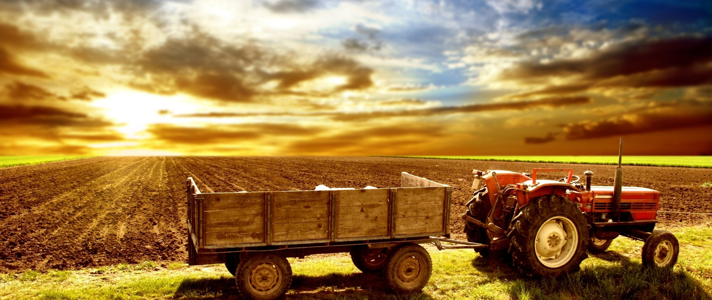

Bienvenue sur le website de La Ferme des Villes de St-Denis !
|  | Sur ce site, que vous soyez enfants ou adultes, entrez dans un monde vert ! Celui de la ferme et de ses animaux ! Depuis 2016, La Ferme des Villes permet à de nombreux passionnés de la nature de vivre une expérience unique et inoubliable à nos côtés. Après nous avoir visité, vous en saurez beaucoup plus sur des importantes thématiques tel que la consommation responsable ou encore l'éducation à l'environnement. |